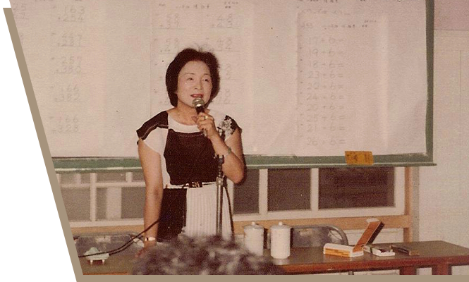
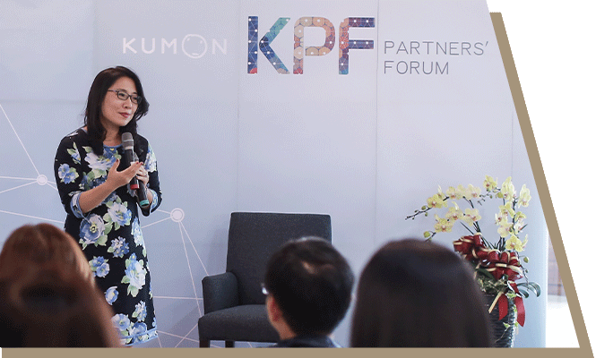
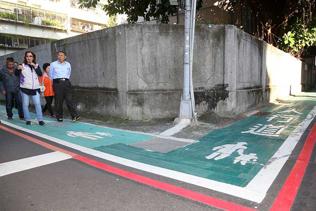
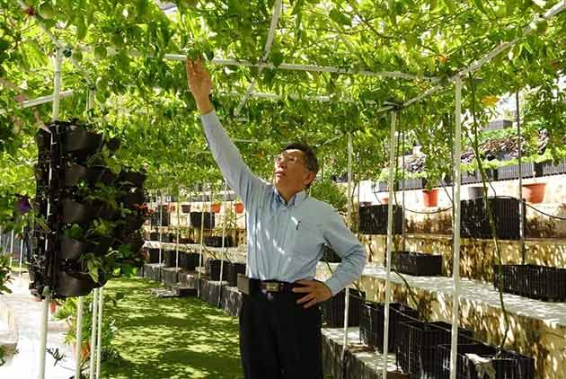
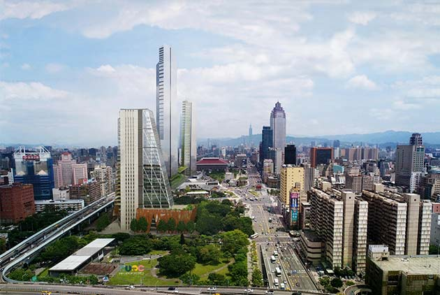

向創新者致敬
打造下一個百年智慧臺北

2015年，我以政治素人的身份走進臺北市政府。自那一刻起，我是臺北市市民的公僕。堅持心存善念，盡力而為，除了認真與意志力，面對問題、解決問題。這是一場不能回頭的政治文化改造運動。

如今，每天7點半，我們準時上工，將政治落實在人民生活的每一天。「改變臺灣從首都開始，改變臺北從文化開始」，面對後疫情時代的新常態，我們透過政府的力量，推動數位轉型。弭平城鄉落差，實踐政府社會責任，就從臺北市做起！
堅持做對的事
臺北品牌・臺灣價值
在「正直誠信」的理念下，讓臺灣社會勇於創新，讓臺北成為試驗場域。相信你應該相信的理念與價值，堅持做對的事，最終我們會實現美好城市願景，實踐臺灣價值，走向共融社會。

鄰里交通環境改善計畫自2015年8月起，2020年全市施作完成

田園城市的臺北，增加綠地面積佔比、高層立體綠化，累積26萬餘市民參與

下一個25年的起點，以北門為中心的「西區門戶計畫」，將臺北西區與桃園中正國際機場串連，成為嶄新的國際城市
造一個教育酷夢
培育優秀人才
（統計1997-2020年）
0
人完成公文式數學、英文、國語之最終（最高）教材。
教育文化與
社會公益關注
自1988年起，基金會捐贈各項教育文化與社會資源
0台救護車／復康巴士 ，關注社會公益，扶助弱勢需求。(1988-2017年)
0套功文式教育乘法歌CD、乘法卡
，強化孩子用唱誦方式認識數學學習。(2003年迄今)
0本小小新鮮人手冊
，讓幼兒家長幫助孩子輕鬆面對小一生活。(2006年迄今)
0套幸福孕袋
，鼓勵懷孕父母重視胎教與學前教育議題(2010年迄今)
2010年迄今，贊助功文增能實驗課程，總輔導人次0人，總金額達0元。
2011-2020年，捐贈教育文化與社會公益現金金額達0元。